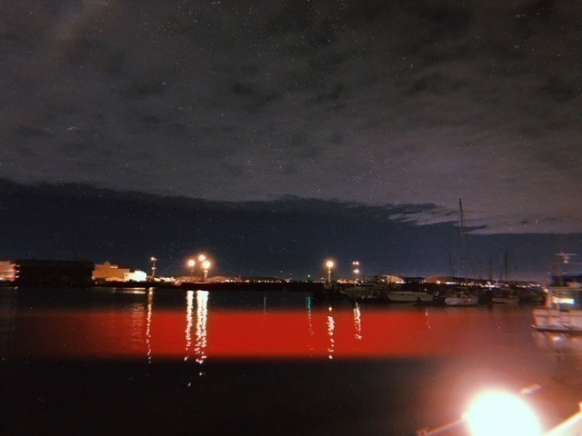

2018/0929Sat夜空の雲
今日は仙台にて握手会でした
はしゃぎすぎて途中声が枯れ気味になり
ご心配をおかけしました
お昼は牛タンカレーと牛タンとお米と
かぼちゃコロッケとサラダを食べました
ご飯が美味しいって幸せ

衣替えをし、私服もすっかり
秋冬服になりました〜
ニット！もこもこ！ふわふわ！
パーカーもたくさん着たいな


最近は、ほぼ毎日ホットギミック
日々いろんなことがあり
いろんな感情があり
成田初として楽しみながら
時に、切なく苦しみながら
撮影をしています。
恋愛を中心とした
恋愛だけではない
さまざまな人間模様。
新たなジャンルの恋愛映画として
若い方はもちろん大人の方にも
見ていただきたいです。
老若男女問わず
見ていただけるような素敵な作品になるよう
今の私の全力を出しきりたいと思います。
山戸監督を信頼しているので
安心して目の前のことに
ぶつかっていきたいな
発表されたキャストの方々
まだ発表されていない皆さんも含め
本当にステキな方々とスタッフさんに囲まれ
充実し、楽しい現場です
毎日やりがいしかないし
既にクランクアップが寂しい...やだ...
橘亮輝役の清水尋也さんは
渇き。やミスミソウなどで観ていて
お芝居に圧倒されていたのですが
現場でも清水さんが
橘くんにしかみえなくて
私も自然と初ちゃんになれます。
日々吸収させていただいています。
小田切梓役の板垣瑞生さんは
歳下とは思えないくらい大人っぽくて
梓のまったりと甘い感じが
普段から滲み出ていて凄いなぁと
思っています。
清水さんと話しているのを聞いていると
天然？なのかな...？
成田凌役の間宮祥太朗さんは
私のお兄ちゃん役なのですが
優しくて落ち着いている所が
凌くんそのままで、
実際にお兄ちゃんがいたら
こんな感じなのかなぁ
という安心感がいつもあります。
私も負けじと頑張らなくちゃ！！
他にもお話ししたいことがたくさん
あるのでブログやレコメンでも
ちょくちょく裏話お話ししていきますね

では
2018/09/29 18:42
コメント(478)
かわいすぎでしょ
台風で外に出れないので、堀さんの写真集眺めとこー
大阪の握手会楽しみにしてますね
台風で外に出れないので、堀さんの写真集眺めとこー
大阪の握手会楽しみにしてますね
これからも撮影現場での話とかいろいろ伝えてね！
チェックするよおー
公開までの楽しみが増えそうだ
よろしく！
チェックするよおー
公開までの楽しみが増えそうだ
よろしく！
こんにちは～
今日は、、台風が、近づいているね～
、、映画の原作、、の漫画、450万部、、売り上げて、英語版も、出たんだね～
、、主人公のキャラクターとか、状況設定、、難しそうだけど、、
、、考え過ぎないで、、みんなと、楽しく、頑張ってね～
、、じゃあ、、またね～
今日は、、台風が、近づいているね～
、、映画の原作、、の漫画、450万部、、売り上げて、英語版も、出たんだね～
、、主人公のキャラクターとか、状況設定、、難しそうだけど、、
、、考え過ぎないで、、みんなと、楽しく、頑張ってね～
、、じゃあ、、またね～
台風には気を付けよう
これは、、、可愛い過ぎると言っていいだろう(*´Д｀*)
ブログ更新ありがとう！握手会お疲れ様です。
ホットギミック素敵な現場みたいで良かった⸜(*ˊᵕˋ*)⸝
3月の名古屋の個握に当選しました！初の乃木坂の握手会は推しの堀ちゃんのところへ…♡今からすっごく楽しみです！
身体に気をつけて、お仕事頑張ってください！喉の調子が早く治りますように໒꒱· ﾟ
ホットギミック素敵な現場みたいで良かった⸜(*ˊᵕˋ*)⸝
3月の名古屋の個握に当選しました！初の乃木坂の握手会は推しの堀ちゃんのところへ…♡今からすっごく楽しみです！
身体に気をつけて、お仕事頑張ってください！喉の調子が早く治りますように໒꒱· ﾟ
かれ未央奈！お疲れ様。
秋の季節は風邪だけ気をつけてね！
では、また！
秋の季節は風邪だけ気をつけてね！
では、また！
僕の将来の夢は警察官です僕は勉強を頑張るので
乃木坂さん頑張ってください
乃木坂さん頑張ってください
こんばんは。
｢頑張れ｣って人から言われたら、
｢ああ、自分は人から見てまだまだ
頑張りが足りないんだな、
よし、もっと頑張ろう！｣
って思わせちゃうから、
頑張ってる人に頑張れとは言えないよ。
だって、充分頑張ってるんだもん。
今の時代、｢何かしなければ｣と
みんな思い過ぎてる気がするよ。
何かをしていることが当たり前で、
何もしていない人はサボってると
思われるのが現代だけど、時々は
何もしないでボーッとしているという
時間を持った方がいいと思うな。
頑張れないときもあるよ。
頑張れないときは、顔晴れ！
｢頑張れ｣って人から言われたら、
｢ああ、自分は人から見てまだまだ
頑張りが足りないんだな、
よし、もっと頑張ろう！｣
って思わせちゃうから、
頑張ってる人に頑張れとは言えないよ。
だって、充分頑張ってるんだもん。
今の時代、｢何かしなければ｣と
みんな思い過ぎてる気がするよ。
何かをしていることが当たり前で、
何もしていない人はサボってると
思われるのが現代だけど、時々は
何もしないでボーッとしているという
時間を持った方がいいと思うな。
頑張れないときもあるよ。
頑張れないときは、顔晴れ！
みおなちゃん更新ありがとう╰(*´︶`*)╯♡
仙台での握手会お疲れ様でした(*´꒳`*)
はしゃぎすぎて声枯れ気味になっちゃったんだねー
その後の調子は大丈夫かな？
だんだんと気温が低くなってるから体調に気を付けてね（╹◡╹）♡
お昼ご飯美味しそうで良いなぁー(´⊙ω⊙`)
秋冬服良いですねー
似合ってて可愛いよー
撮影日々お疲れ様です٩(๑❛ᴗ❛๑)۶
充実した毎日でなによりです(*´-`)
頑張ってねー
仙台での握手会お疲れ様でした(*´꒳`*)
はしゃぎすぎて声枯れ気味になっちゃったんだねー
その後の調子は大丈夫かな？
だんだんと気温が低くなってるから体調に気を付けてね（╹◡╹）♡
お昼ご飯美味しそうで良いなぁー(´⊙ω⊙`)
秋冬服良いですねー
似合ってて可愛いよー
撮影日々お疲れ様です٩(๑❛ᴗ❛๑)۶
充実した毎日でなによりです(*´-`)
頑張ってねー
映画、楽しみにしています!!
ブログ更新ありがとう✨
どんなことがあっても
美味しいご飯が食べられれば全てが幸せに感じられるから良き♪
ブログやレコメン!での映画の裏話 楽しみに待ってるね！
個人的なことだけど明日は内定式や〜
緊張する。
頑張ろう٩( 'ω' )و
どんなことがあっても
美味しいご飯が食べられれば全てが幸せに感じられるから良き♪
ブログやレコメン!での映画の裏話 楽しみに待ってるね！
個人的なことだけど明日は内定式や〜
緊張する。
頑張ろう٩( 'ω' )و
あきちゃんです。未央奈ちゃんこんばわ、来週の東京ビッグサイトのでの握手会楽しみにしてます。生写真もいっぱい買います。未央奈ちゃんの当たるといいな。そして今日台風２４号今ちょうどかぜと雨がすごいです。電車もうごかないです。そしてまた２２枚のシングルの握手券とります。そして西野七瀬ちゃんが卒業決まったね、さみしいけどまだ芸能界やめるわけじゃないから、テレビ局で会えるかもしれないです。１０月１３日じゃなくその次の１０月２１日の握手会に行きますね。乃木坂46のなかで１番未央奈ちゃんが大好きだよ。コメント入るまで何回も書きます。♥️♥️♥️♥️♥️♥️♥️♥️♥️♥️♥️♥️♥️♥️♥️♥️♥️♥️♥️♥️♥️♥️♥️♥️♥️♥️♥️♥️♥️♥️♥️♥️♥️♥️♥️♥️♥️♥️♥️♥️♥️♥️♥️♥️♥️♥️♥️♥️♥️♥️♥️♥️♥️♥️♥️
あきちゃんです。未央奈ちゃんこんばわ、来週の東京ビッグサイトのでの握手会楽しみにしてます。生写真もいっぱい買います。未央奈ちゃんの当たるといいな。そして今日台風２４号今ちょうどかぜと雨がすごいです。電車もうごかないです。そしてまた２２枚のシングルの握手券とります。そして西野七瀬ちゃんが卒業決まったね、さみしいけどまだ芸能界やめるわけじゃないから、テレビ局で会えるかもしれないです。１０月１３日じゃなくその次の１０月２１日の握手会に行きますね。乃木坂46のなかで１番未央奈ちゃんが大好きだよ。コメント入るまで何回も書きます。♥️♥️♥️♥️♥️♥️♥️♥️♥️♥️♥️♥️♥️♥️♥️♥️♥️♥️♥️♥️♥️♥️♥️♥️♥️♥️♥️♥️♥️♥️♥️♥️♥️♥️♥️♥️♥️♥️♥️♥️♥️♥️♥️♥️♥️♥️♥️♥️♥️♥️♥️♥️♥️♥️♥️
可愛い
堀ちゃんこんばんは！！
前のブログへのコメントが中々まとまらず滞ってたら、できないまま新しい記事が更新されてしまって痛恨の極みです…！
想いを正確に迅速に伝えられる文章力が欲しいものです( ´ 〜 ` )
と、そんな個人的なことはさておき、遅くなってしまいましたがホットギミック主演決定おめでとうございます！！
堀ちゃんは前々からお芝居のお仕事をやりたいと言ってましたよね。
それを聞いていたので、堀ちゃんの目標がスタートしたことの嬉しさ、そして言葉にしていた目標がを実現した堀ちゃんの人としての凄さ、強さを感じました…( ´ ▽ ` )
堀ちゃんは僕たちファンを色んな世界に連れて行ってくれて、色んな景色を見せてくれます(o^^o)
その度に堀ちゃんを応援できて幸せだなぁ、堀ちゃんを好きになって本当によかったなぁと思えます( ´ ▽ ` )
これから忙しくなったり、初めてのお仕事で戸惑うかもしれませんが、堀ちゃんのやりたいように、堀ちゃんらしさを存分に発揮して楽しんでくださいね！
そのままの堀ちゃんが大好きなので！！
堀ちゃんの素敵なところがたくさん見られるホットギミック、めちゃめちゃ楽しみにしてます(o^^o)
そして「君らしさ」ってほんとにいいタイトルですね( ´ ▽ ` )笑
そして今回もたくさん写真！もう相変わらず全部可愛い、一表情一表情に全部違う可愛さがある(o^^o)
やっぱり人としても好きなんですけど、お顔も好きなんですよね〜( ´ ▽ ` )笑
さて、東京は台風これからでしょうか、堀ちゃんがとても心配です( ´ 〜 ` )
屋内でご家族と一緒に、安心できる場で過ごしてくださいね…！
では、これから僕たちもさらに気合を入れて応援しますよー！
おやすみおなー！
前のブログへのコメントが中々まとまらず滞ってたら、できないまま新しい記事が更新されてしまって痛恨の極みです…！
想いを正確に迅速に伝えられる文章力が欲しいものです( ´ 〜 ` )
と、そんな個人的なことはさておき、遅くなってしまいましたがホットギミック主演決定おめでとうございます！！
堀ちゃんは前々からお芝居のお仕事をやりたいと言ってましたよね。
それを聞いていたので、堀ちゃんの目標がスタートしたことの嬉しさ、そして言葉にしていた目標がを実現した堀ちゃんの人としての凄さ、強さを感じました…( ´ ▽ ` )
堀ちゃんは僕たちファンを色んな世界に連れて行ってくれて、色んな景色を見せてくれます(o^^o)
その度に堀ちゃんを応援できて幸せだなぁ、堀ちゃんを好きになって本当によかったなぁと思えます( ´ ▽ ` )
これから忙しくなったり、初めてのお仕事で戸惑うかもしれませんが、堀ちゃんのやりたいように、堀ちゃんらしさを存分に発揮して楽しんでくださいね！
そのままの堀ちゃんが大好きなので！！
堀ちゃんの素敵なところがたくさん見られるホットギミック、めちゃめちゃ楽しみにしてます(o^^o)
そして「君らしさ」ってほんとにいいタイトルですね( ´ ▽ ` )笑
そして今回もたくさん写真！もう相変わらず全部可愛い、一表情一表情に全部違う可愛さがある(o^^o)
やっぱり人としても好きなんですけど、お顔も好きなんですよね〜( ´ ▽ ` )笑
さて、東京は台風これからでしょうか、堀ちゃんがとても心配です( ´ 〜 ` )
屋内でご家族と一緒に、安心できる場で過ごしてくださいね…！
では、これから僕たちもさらに気合を入れて応援しますよー！
おやすみおなー！
未央奈〜！こんばんはっ！
握手会お疲れ様。
はしゃぎすぎて声枯れちゃったのか。笑
映画撮影もがんばりながら握手会でファンを喜ばせてくれるんだから未央奈ってすごい！
あ、こっちも未央奈みたいに最近平日は早起きしてるんだけどもう眠いこと。眠いこと。。
おかげで今日は結構な時間寝ちゃったわ。笑
でも早起きすると午前中にも活動ができるから素晴らしいよね！☺︎
おっ、牛タン食べれタンだね！！笑
食べれる幸せ。おいしい幸せ。私も幸せ。
なんか良いこと言おうとしたけどよくわかんなくなったからいいや。笑
かわいっ。
髪型とか服装とか首の傾きとか！？
足ほっそ。
秋冬服きたぁ〜〜！
レコメン！で言ってたグレーのパーカー着たのかと思いきやニット〜✨
がんばってるね！ホットギミック。
未央奈の全力見してみぃ！！！
既にクランクアップが寂しいのか。笑った。
芸能人にそんなに詳しくないこっちが知ってるぐらいだからすごい人達と共演してるんだよね！さすが未央奈！
負けるなよ〜〜⤴︎
情報ちょくちょく待ってます。(^-^)
夜空を覆うかのようにひろーい雲だね！
雲。って月とか太陽が輝くのを邪魔してるのかと思ってたけどそうじゃなくて、月とか太陽がひとりぼっちにならないように傍にいてくれてるのかなって最近空見ながら考えた。
仲間とか家族とか。大切な存在。
(ちょっと夜空見ようかなと窓開けたら台風でずぶ濡れになった人のコメント。
よっしゃ！明日は内定式。
台風よ、どっかいけ〜〜
では。またね〜✌️
握手会お疲れ様。
はしゃぎすぎて声枯れちゃったのか。笑
映画撮影もがんばりながら握手会でファンを喜ばせてくれるんだから未央奈ってすごい！
あ、こっちも未央奈みたいに最近平日は早起きしてるんだけどもう眠いこと。眠いこと。。
おかげで今日は結構な時間寝ちゃったわ。笑
でも早起きすると午前中にも活動ができるから素晴らしいよね！☺︎
おっ、牛タン食べれタンだね！！笑
食べれる幸せ。おいしい幸せ。私も幸せ。
なんか良いこと言おうとしたけどよくわかんなくなったからいいや。笑
かわいっ。
髪型とか服装とか首の傾きとか！？
足ほっそ。
秋冬服きたぁ〜〜！
レコメン！で言ってたグレーのパーカー着たのかと思いきやニット〜✨
がんばってるね！ホットギミック。
未央奈の全力見してみぃ！！！
既にクランクアップが寂しいのか。笑った。
芸能人にそんなに詳しくないこっちが知ってるぐらいだからすごい人達と共演してるんだよね！さすが未央奈！
負けるなよ〜〜⤴︎
情報ちょくちょく待ってます。(^-^)
夜空を覆うかのようにひろーい雲だね！
雲。って月とか太陽が輝くのを邪魔してるのかと思ってたけどそうじゃなくて、月とか太陽がひとりぼっちにならないように傍にいてくれてるのかなって最近空見ながら考えた。
仲間とか家族とか。大切な存在。
(ちょっと夜空見ようかなと窓開けたら台風でずぶ濡れになった人のコメント。
よっしゃ！明日は内定式。
台風よ、どっかいけ〜〜
では。またね〜✌️
やぁ(・∀・)ノ未央奈ちゃん♡こんばんは！ブログありがとう！
りょーへー(R.N.イナダウアーびーむ)だよ♪
昨日は、仙台での握手会、お疲れ様！お洋服、秋っぽさがあるね！かわいい～～！ポニーテールもめっちゃよき！お昼ご飯、めちゃくちゃ食べとるやん！さすがだなぁ！
ホットギミック、最後まで頑張ってね！
#今日もお疲れ様
#台風凄いね
#雨と風があり得んくらいや
#あー
#この時間に
#お腹が空いて仕方がない
#何でや
#明日も楽しみおな♡
#おやすみおな(^◇^)
りょーへー(R.N.イナダウアーびーむ)だよ♪
昨日は、仙台での握手会、お疲れ様！お洋服、秋っぽさがあるね！かわいい～～！ポニーテールもめっちゃよき！お昼ご飯、めちゃくちゃ食べとるやん！さすがだなぁ！
ホットギミック、最後まで頑張ってね！
#今日もお疲れ様
#台風凄いね
#雨と風があり得んくらいや
#あー
#この時間に
#お腹が空いて仕方がない
#何でや
#明日も楽しみおな♡
#おやすみおな(^◇^)
未央奈ブログ更新ありがとう！
仙台の握手会お疲れ様。
ニット似合ってて可愛い。
東京の握手会は行くから楽しみにしてるよ。
ホットギミックの撮影頑張ってね。
裏話も楽しみにしてるよ。
仙台の握手会お疲れ様。
ニット似合ってて可愛い。
東京の握手会は行くから楽しみにしてるよ。
ホットギミックの撮影頑張ってね。
裏話も楽しみにしてるよ。
未央奈ちゃん、ひろっしーです！コメント投稿514回目です！
前回はブログの感想を書きました！
時間→「No.340 2018年9月30日 01:46」
モバメ毎日ありがとうございます！
まずは心配して下さりありがとうございます！僕を含む両親と犬のラッキーくんは無事です！心配して下さった事は勿論嬉しかったですし、加えて今日も可愛い未央奈ちゃんを見れて凄く癒されました！いやぁ、有り難い！感謝感謝！晩ご飯はもんじゃかぁ！いつか食べてみたい！
お昼過ぎに所属している病棟の師長から「近鉄15時まで動いとるから、動いとる内に帰って良いよ。」と早退の許可をもらったのですが、15時前にチェックしたら既に近鉄(通勤範囲)が停まっていました！なので、両親に電話をして迎えに来てもらい、初めて定時の1時間ぐらい早く早退しました！僕だけゴメンって感じ(謝)
帰宅したのは17時前、停電する前にお風呂に入って、晩ご飯はお鍋を食べました！それと、帰れない時のために朝ファミマで買っておいた5個のおにぎりも少し食べました！
以上、今日の出来事でした！
いやぁ、もし帰れなかったら空いている病室に泊まる事になっていたので帰れて良かった～！
それじゃあ「乃木中」観て寝よっと！
ライブ潜入の後半戦と選抜発表かぁ～(楽)
ここまで読んで頂きありがとうございました！
毎日お仕事お疲れ様です！体調にはくれぐれも気を付けて頑張ってくださいね！
おやすみおな～！
前回はブログの感想を書きました！
時間→「No.340 2018年9月30日 01:46」
モバメ毎日ありがとうございます！
まずは心配して下さりありがとうございます！僕を含む両親と犬のラッキーくんは無事です！心配して下さった事は勿論嬉しかったですし、加えて今日も可愛い未央奈ちゃんを見れて凄く癒されました！いやぁ、有り難い！感謝感謝！晩ご飯はもんじゃかぁ！いつか食べてみたい！
お昼過ぎに所属している病棟の師長から「近鉄15時まで動いとるから、動いとる内に帰って良いよ。」と早退の許可をもらったのですが、15時前にチェックしたら既に近鉄(通勤範囲)が停まっていました！なので、両親に電話をして迎えに来てもらい、初めて定時の1時間ぐらい早く早退しました！僕だけゴメンって感じ(謝)
帰宅したのは17時前、停電する前にお風呂に入って、晩ご飯はお鍋を食べました！それと、帰れない時のために朝ファミマで買っておいた5個のおにぎりも少し食べました！
以上、今日の出来事でした！
いやぁ、もし帰れなかったら空いている病室に泊まる事になっていたので帰れて良かった～！
それじゃあ「乃木中」観て寝よっと！
ライブ潜入の後半戦と選抜発表かぁ～(楽)
ここまで読んで頂きありがとうございました！
毎日お仕事お疲れ様です！体調にはくれぐれも気を付けて頑張ってくださいね！
おやすみおな～！
やっぱり牛タンだよね
ホットギミック楽しみです！普段漫画は読まないのですが、映画を見る前に読んでみようかなと思っています！堀ちゃんは原作を読んで、演じる際に意識していることとかあるんですか？
もんじゃウマペロンヌでござる[岩蔭|](ｴ)￣)
今まさに台風の直撃を受けて我が家が悲鳴を上げています。何とか耐え忍んでくれと祈る思いです。そして選抜発表‥。その結果に台風の凄まじい風雨に煽られるように僕の心もかき乱されています。ただ自分の中ではっきりと確認できたことは、この発表を受けて未央奈と未央奈の願いをいつも応援している自分がいるという事です。前進する未央奈に負けないように僕も頑張ります。映画楽しみにしていますね。
堀さん、こんばんは。
工事中みました。選抜発表は堀さんにとって悔しい内容だったかもしれませんけど、堀さんならその悔しさも前に進む力に変えられるから大丈夫です。
今はとにかくホットギミックの撮影を頑張ってくださいね。
濃密な感情に満ちた毎日をどうぞ楽しんでください。
工事中みました。選抜発表は堀さんにとって悔しい内容だったかもしれませんけど、堀さんならその悔しさも前に進む力に変えられるから大丈夫です。
今はとにかくホットギミックの撮影を頑張ってくださいね。
濃密な感情に満ちた毎日をどうぞ楽しんでください。
映画とても気になってくる
撮影頑張ってね
未央奈ならきっとできるよ
撮影頑張ってね
未央奈ならきっとできるよ
選抜発表見ました
やるせないの答えがわかりました
今未央奈が前向きになって映画の仕事に取り組んでることもわかりました
握手会にも参加してるから本当に体調には気をつけて下さい
やるせないの答えがわかりました
今未央奈が前向きになって映画の仕事に取り組んでることもわかりました
握手会にも参加してるから本当に体調には気をつけて下さい
未央奈
握手会お疲れ様
美味しいものも食べられて良かった♪ヽ(´▽｀)/
仕事忙しくてなかなか握手会行けない
早く会いたい
またコメント
SONYでした
755コメント中
握手会お疲れ様
美味しいものも食べられて良かった♪ヽ(´▽｀)/
仕事忙しくてなかなか握手会行けない
早く会いたい
またコメント
SONYでした
755コメント中
未央奈♪ヽ(´▽｀)/
映画の撮影始まっているんだね
早く完成したら観に行きターイ❗♪ヽ(´▽｀)/
体調管理はしっかりとね
またコメントするね
SONYでした
ちなみに自分は風邪を引いて寝込んでいます(笑)
映画の撮影始まっているんだね
早く完成したら観に行きターイ❗♪ヽ(´▽｀)/
体調管理はしっかりとね
またコメントするね
SONYでした
ちなみに自分は風邪を引いて寝込んでいます(笑)
映画出演決定ほんとにおめでとう！！
色んなとこで活躍してる未央奈みれて幸せだよ〜
色んなとこで活躍してる未央奈みれて幸せだよ〜
ブログ更新ありがとう！ホットギミック楽しみにしてるよー今日もかわいい写真をありがとう
未央奈の存在が支えになってると思う。引っ張るのは未央奈だ！
おはようございます‼︎
昨日の台風は、すごかったですね。
風圧で窓が割れてしまうんじゃないかと思うぐらいの激しさでした。
未央奈は、大丈夫でしたか？
何事もなかったことをお祈りしてます。
さて、仙台での握手会。
お疲れ様でした♪
はしゃぎ過ぎて、声が枯れてしまったんですね‼︎
いずれにせよ、元気なのはいいこといいこと♪
お昼は、牛タンカレーと牛タンとお米とかぼちゃコロッケとサラダ。
う〜ん、バランスが取れているような、取れていないような(笑)。
サラダの内容次第かなあ。
でも、牛タンカレーに牛タンとお米は入っているから、この2つは完全にダブりですね(笑)。
まあ、せっかくの仙台ですもんね♪
美味しいものをしっかりと堪能できたみたいで、よかったです…‼︎
最近は、ホットギミックの撮影が中心の生活なんですね。
将来の夢が女優さんである未央奈にとって、大切な時期。
楽しみながらたくさんのことを吸収して、頑張ってください‼︎
ではでは、また。
今日も未央奈にとっていい1日になりますように♪
昨日の台風は、すごかったですね。
風圧で窓が割れてしまうんじゃないかと思うぐらいの激しさでした。
未央奈は、大丈夫でしたか？
何事もなかったことをお祈りしてます。
さて、仙台での握手会。
お疲れ様でした♪
はしゃぎ過ぎて、声が枯れてしまったんですね‼︎
いずれにせよ、元気なのはいいこといいこと♪
お昼は、牛タンカレーと牛タンとお米とかぼちゃコロッケとサラダ。
う〜ん、バランスが取れているような、取れていないような(笑)。
サラダの内容次第かなあ。
でも、牛タンカレーに牛タンとお米は入っているから、この2つは完全にダブりですね(笑)。
まあ、せっかくの仙台ですもんね♪
美味しいものをしっかりと堪能できたみたいで、よかったです…‼︎
最近は、ホットギミックの撮影が中心の生活なんですね。
将来の夢が女優さんである未央奈にとって、大切な時期。
楽しみながらたくさんのことを吸収して、頑張ってください‼︎
ではでは、また。
今日も未央奈にとっていい1日になりますように♪
未央奈 おはよう！
ホットギミック 楽しみすぎて、来年まで待てるか不安。
だから、裏話 沢山して！物凄く興味ある！どんな色合いの景色が見えるのかな？
リラックスして未央奈で楽しんでね。
22nd
ごめんね。自分は、10番目で正直にホットしてます。
10番目というポジションが、良い悪いでなくてね。
直感的に。未央奈は未央奈だし。
台風が過ぎたら こんなに素敵な青空。
夜空にも星々が輝く。
前へ前へ。
未央奈は未央奈のままで、
最高の笑顔を！
ホットギミック 楽しみすぎて、来年まで待てるか不安。
だから、裏話 沢山して！物凄く興味ある！どんな色合いの景色が見えるのかな？
リラックスして未央奈で楽しんでね。
22nd
ごめんね。自分は、10番目で正直にホットしてます。
10番目というポジションが、良い悪いでなくてね。
直感的に。未央奈は未央奈だし。
台風が過ぎたら こんなに素敵な青空。
夜空にも星々が輝く。
前へ前へ。
未央奈は未央奈のままで、
最高の笑顔を！
未央奈ちゃん台風大丈夫だった
暴風ヤバかったね
斉藤貴巳
暴風ヤバかったね
斉藤貴巳
未央奈ちゃん、こんにちは。
22枚目も応援します‼
映画が待ち遠しいです。
乃木坂46と頑張ってるcuteでsmartな未央奈ちゃんを応援しています。
22枚目も応援します‼
映画が待ち遠しいです。
乃木坂46と頑張ってるcuteでsmartな未央奈ちゃんを応援しています。
堀ちゃん毎日お疲れ様です！
選抜発表見ました、色々な考えや条件があって選抜の順列、選抜アンダーの振り分けがあると思います。だから、ただ「今はそうなんだ」と思いました。今のフロントに堀ちゃんが不必要とはとても思えません、ですから色々な考えや条件があっての今回の選抜の順列だと感じました。言われなくてもだとは勿論思いますが、今は目の前の仕事を全力でこなして下さい。
でわでわ。
選抜発表見ました、色々な考えや条件があって選抜の順列、選抜アンダーの振り分けがあると思います。だから、ただ「今はそうなんだ」と思いました。今のフロントに堀ちゃんが不必要とはとても思えません、ですから色々な考えや条件があっての今回の選抜の順列だと感じました。言われなくてもだとは勿論思いますが、今は目の前の仕事を全力でこなして下さい。
でわでわ。
毎日撮影おつかれさまです！
未央奈がご飯いっぱい食べてるのっていーよね！！
だって未央奈、ご飯の話のときほんとに楽しそうに見えるもん！！
壁ぶつかりながらも頑張ってね！！
何事も経験しながら楽しんでね！！
いつも応援してます！
未央奈がご飯いっぱい食べてるのっていーよね！！
だって未央奈、ご飯の話のときほんとに楽しそうに見えるもん！！
壁ぶつかりながらも頑張ってね！！
何事も経験しながら楽しんでね！！
いつも応援してます！
堀未央奈有っての
乃木坂46
乃木坂46有っての
堀未央奈‼(笑)。
未央奈可愛い(笑)。
未央奈綺麗(笑)。
未央奈最高(笑)。
未央奈結婚しよ(笑)
未央奈は俺の彼女。
未央奈は俺の嫁(笑)
えっと後は････････
とにかく堀未央奈
ホットギミック･･･
キスするな未央奈☝
推し変するからな☝
ホットギミックは
楽しみでも有り
楽しみでも無い。
でも乃木坂では
堀未央奈が１番
仮に堀未央奈が居なければ､
星野みなみ
樋口日奈
伊藤万理華
生田絵梨花
山下美月
辺りかな(笑)。
でも堀未央奈は
越えられないんだ。
乃木坂46
乃木坂46有っての
堀未央奈‼(笑)。
未央奈可愛い(笑)。
未央奈綺麗(笑)。
未央奈最高(笑)。
未央奈結婚しよ(笑)
未央奈は俺の彼女。
未央奈は俺の嫁(笑)
えっと後は････････
とにかく堀未央奈
ホットギミック･･･
キスするな未央奈☝
推し変するからな☝
ホットギミックは
楽しみでも有り
楽しみでも無い。
でも乃木坂では
堀未央奈が１番
仮に堀未央奈が居なければ､
星野みなみ
樋口日奈
伊藤万理華
生田絵梨花
山下美月
辺りかな(笑)。
でも堀未央奈は
越えられないんだ。
堀ちゃんブログ更新ありがとう‼️
仙台の個握行ったよ〜 めっちゃかわいいし楽しかった
ありがとうございました‼️体調には気をつけてね❗️
ホットギミック頑張ってね 堀ちゃんの演技はめっちゃ好きだから楽しみに待ってます
仙台の個握行ったよ〜 めっちゃかわいいし楽しかった
ありがとうございました‼️体調には気をつけてね❗️
ホットギミック頑張ってね 堀ちゃんの演技はめっちゃ好きだから楽しみに待ってます
やぁ(・∀・)ノ未央奈ちゃん♡こんばんは！
りょーへー(R.N.イナダウアーびーむ)だよ♪
今日から10月なんだねー！あっという間に10月になってしまったようなイメージ！10月に入ると、まさに秋になったんだな、って感じがする！まぁ、今日は夏みたいに暑かったけど！笑 秋らしいことしたいなぁ！グルメとか、スポーツとか、美術とか、読書とか！綺麗な紅葉もみたい！
どんな時も、前向きに、少しずつでも、進んでいこう！
#今日もお疲れ様
#ホットギミック
#撮影が進んでるんだね
#がんばれぇぇぇ
#頑張った先に
#喜べることが
#あると思う
#明日も楽しみおな♡
#おやすみおな(*´-`)
りょーへー(R.N.イナダウアーびーむ)だよ♪
今日から10月なんだねー！あっという間に10月になってしまったようなイメージ！10月に入ると、まさに秋になったんだな、って感じがする！まぁ、今日は夏みたいに暑かったけど！笑 秋らしいことしたいなぁ！グルメとか、スポーツとか、美術とか、読書とか！綺麗な紅葉もみたい！
どんな時も、前向きに、少しずつでも、進んでいこう！
#今日もお疲れ様
#ホットギミック
#撮影が進んでるんだね
#がんばれぇぇぇ
#頑張った先に
#喜べることが
#あると思う
#明日も楽しみおな♡
#おやすみおな(*´-`)
撮影頑張ってね！！！！！
体に気をつけてね！！！！
体に気をつけてね！！！！
１０月に入ってどんどん寒くなってくるから、体調には十分に注意してね！！
頑張ってくださいね！
ずーっと応援してますよ！
ずーっと応援してますよ！
こんばんは
仙台での握手会、お疲れ様
仙台のお昼、美味しそうですね！
ニットのグレーのワンピース、
とても似合ってます♡
髪型も♪
その髪型好きです！
イヤリングもステキ！
未央奈さんの言う新たなジャンルの恋愛映画
「ホットギミック」、
映像で拝見した事のある俳優さんもいて
益々楽しみになってきました！
未央奈さんの気持ちを
どんどんを伝えていこう
この作品にかける思いを
映画の裏話、楽しみにしていますね！
応援してます！！
素敵なブログの言葉、、
写真も、本当にかわいい未央奈さん！
夜空の雲も本当にステキです♡
おやすみなさい☺︎
また
仙台での握手会、お疲れ様
仙台のお昼、美味しそうですね！
ニットのグレーのワンピース、
とても似合ってます♡
髪型も♪
その髪型好きです！
イヤリングもステキ！
未央奈さんの言う新たなジャンルの恋愛映画
「ホットギミック」、
映像で拝見した事のある俳優さんもいて
益々楽しみになってきました！
未央奈さんの気持ちを
どんどんを伝えていこう
この作品にかける思いを
映画の裏話、楽しみにしていますね！
応援してます！！
素敵なブログの言葉、、
写真も、本当にかわいい未央奈さん！
夜空の雲も本当にステキです♡
おやすみなさい☺︎
また
こんばんは！
映画主演おめでとう！！！！！
これ知ったときほんっっとに嬉しかった！絶対観に行くね！
共演者さんにも恵まれているようで、素敵な現場で良かった。
この映画が観た人にどんな影響を与えるのか、楽しみだね。
映画主演おめでとう！！！！！
これ知ったときほんっっとに嬉しかった！絶対観に行くね！
共演者さんにも恵まれているようで、素敵な現場で良かった。
この映画が観た人にどんな影響を与えるのか、楽しみだね。
堀殿ぐうかわ(〃ω〃)秋晴れでばいころまる|壁|￣▽￣)つ■チョコいかが？
負けるな2期生
全力で巻き返しはこれからだ。
全力で巻き返しはこれからだ。
未央奈ー❗️
ブログありがとう❗️
映画絶対見る❗️
幕張の個握楽しみー✨
ゆうたんより
ブログありがとう❗️
映画絶対見る❗️
幕張の個握楽しみー✨
ゆうたんより


昨日の握手会お疲れ様のありがとう！今日もお仕事かな？今回近づいてきてる台風物凄く強いらしいから気をつけてお仕事頑張ってね！